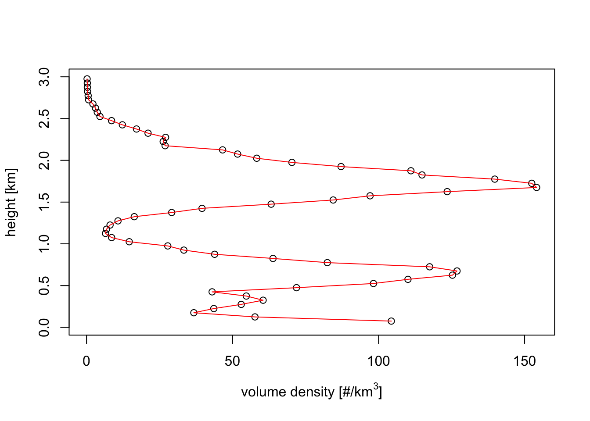

5 Range bias correction
In this paragraph you will create an image of vertically integrated bird density that has been corrected for range biases. We will assume that all birds within the image are distributed vertically according to the same relative vertical profile.
We will start with downloading a polar volume and processing it into a profile:
5.1 Processing a polar volume into a profile
# download a polar volume for the KBRO radar in Brownsville, TX
download_pvolfiles(date_min=as.POSIXct("2017-05-14 05:50:00"), date_max=as.POSIXct("2017-05-14 06:00:00"), radar="KBRO", directory="./data_pvol")## Downloading data from noaa-nexrad-level2 for radar KBRO spanning over 1 days##
## Downloading pvol for 2017/05/14/KBRO/# Load all the polar volume filenames downloaded so far for the KBRO radar:
my_pvolfiles <- list.files("./data_pvol", recursive = TRUE, full.names = TRUE, pattern="KBRO")
# we will process the first one into a vp:
my_pvolfile <- my_pvolfiles[1]
# calculate the profile, using MistNet to remove precipitation:
# we calculate 60 layers of 50 meter width, so up to 30*100=3000 m.
my_vp <- calculate_vp(my_pvolfile, n_layer=60, h_layer=50, sd_vvp_threshold = 1)5.2 Range bias correction and vertical integration on a map
# We will use the piping operator %>% of magrittr package to
# execute multiple operations in one statement:
library(magrittr)
# first, load the polar volume:
my_pvolfile %>% read_pvolfile() -> my_pvol## Filename = ./data_pvol/2017/05/14/KBRO/KBRO20170514_055309_V06, callid = KBRO
## Reading RSL polar volume with nominal time 20170514-055309, source: RAD:KBRO,PLC:BROWNSVILLE,state:TX,radar_name:KBRO# Next, let's calculate a PPI for the 1.5 degree elevation scan
# Finally, we calculated the vertically integrated PPI
my_ppi_integrated <- integrate_to_ppi(pvol=my_pvol,vp=my_vp, res=1000)Exercise 13: Visually compare the PPI for the 1.0 degree sweep and the vertically integrated PPI, and explain the differences. Hint: for the clearest comparison, make plots of comparable parameters that are either linear or logarithmic in bird density.
#
my_pvol %>%
get_scan(elev = 1.0) %>%
project_as_ppi(raster=raster::raster(my_ppi_integrated$data)) ->
my_ppi
# let's take the logarithm of the vertically integrated density, so
# we can compare it more directly to DBZH, which is also a logarithmic quantity:
my_ppi_integrated <- calculate_param(my_ppi_integrated, logVID=log(VID))
# plot both ppi's:
plot(my_ppi)
plot(my_ppi_integrated, param="logVID", zlim=c(-10,10))
# The altitude distribution in this case shows two migration layers.
# In the 1.5 PPI scan these show up as two concentric rings of density.
# Since in a conventional PPI a larger distance from the radar also
# implies a higher altitude, we see the rings showing up at the
# ranges where the beam intersects each of the migration layers.
#
# The vertically integrated PPI is more straightforward to interpret
# Here we correct for aforementioned beam effects and integrate the
# density over altitude, giving a more realistic reconstruction of the
# spatial distribution of migrants.